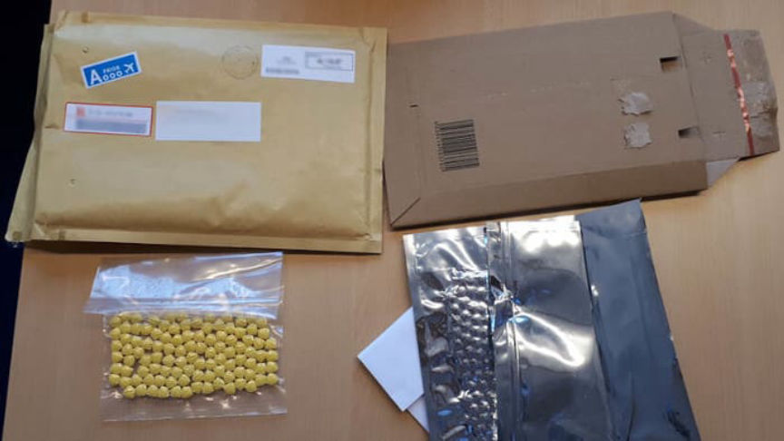
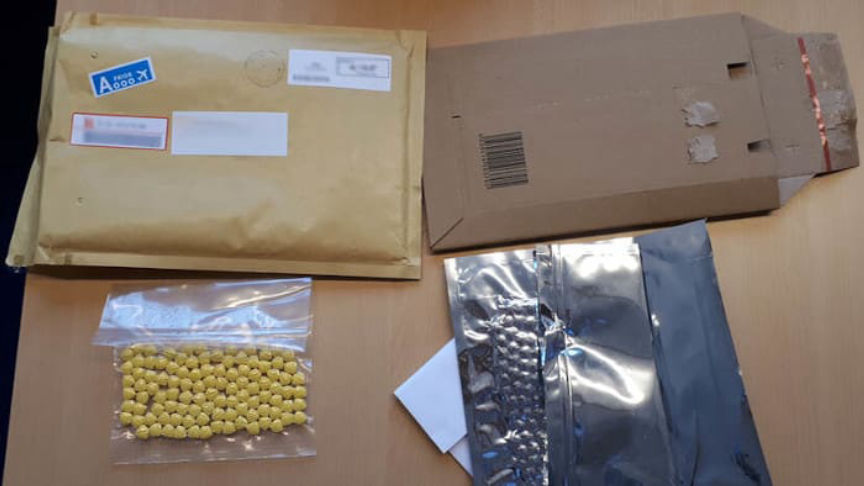

Two Arrested for Running a Large-Scale Darkweb Drug Operation
~2 min read | Published on 2020-02-20, tagged Arrested, DarkWeb, Darkweb-Vendor, Drug-Bust, Drugs using 353 words.
An extensive joint investigation by German and Dutch authorities led to the arrest of two Dutchmen for selling a variety of drugs on multiple darkweb marketplaces. According to investigators, the duo had shipped thousands of drug packages to customers worldwide.
According to an announcement by the Dutch Public Prosecution Service, the Frankfurt Customs Investigation Office launched the investigation into this darkweb drug trafficking operation in early 2019. Frankfurt customs authorities suspected that one of the suspected drug traffickers had been using German post offices and mailboxes to ship drugs to customers.
In May 2019, Dutch authorities started conducting surveillance at the request of German law enforcement. During the course of the investigation, the authorities established that a 40-year-old man from Voorburg, Netherlands, had control of a darkweb vendor account linked to the operation. The suspect reportedly offered cocaine, MDMA, amphetamine, LSD, and ecstasy on various darkweb marketplaces (investigators have not disclosed the names of the marketplaces or the vendors accounts allegedly used by the suspects). Investigators reportedly linked vendor accounts under different names to the same suspect(s).

The second suspect, a 38-year-old from Pijnacker, Netherlands, allegedly prepared the drugs and shipped drug packages to customers. The 38-year-old reportedly packaged the drugs in a storage unit in the Netherlands. In an effort to avoid detection, the suspect then drove the packages over the border to Germany where he mailed the packs from different mailboxes and post offices.
Frankfurt customs officers arrested the 38-year-old Dutchman in Kleve on February 13, 2020. Hague police arrested the 40-year-old the same day. Authorities executed search warrants on the suspects homes, vehicles, and storage units. They seized several kilograms of drugs in the 38-year-old’s car as well as in a storage unit used by the suspects.
Authorities believe the arrests ended a large scale darkweb drug trafficking operation. According to the press release, the duo had shipped more than 2,300 to buyers worldwide.
The 38-year-old will be charged in Germany by the Cologne Public Prosecutor’s Office. The 40-year-old was presented before a magistrate in the Hague District Court for his pretrial detention hearing and detained for fourteen days.
According to an announcement by the Dutch Public Prosecution Service, the Frankfurt Customs Investigation Office launched the investigation into this darkweb drug trafficking operation in early 2019. Frankfurt customs authorities suspected that one of the suspected drug traffickers had been using German post offices and mailboxes to ship drugs to customers.
In May 2019, Dutch authorities started conducting surveillance at the request of German law enforcement. During the course of the investigation, the authorities established that a 40-year-old man from Voorburg, Netherlands, had control of a darkweb vendor account linked to the operation. The suspect reportedly offered cocaine, MDMA, amphetamine, LSD, and ecstasy on various darkweb marketplaces (investigators have not disclosed the names of the marketplaces or the vendors accounts allegedly used by the suspects). Investigators reportedly linked vendor accounts under different names to the same suspect(s).

Packages of drugs intercepted by investigators | OM
The second suspect, a 38-year-old from Pijnacker, Netherlands, allegedly prepared the drugs and shipped drug packages to customers. The 38-year-old reportedly packaged the drugs in a storage unit in the Netherlands. In an effort to avoid detection, the suspect then drove the packages over the border to Germany where he mailed the packs from different mailboxes and post offices.
Frankfurt customs officers arrested the 38-year-old Dutchman in Kleve on February 13, 2020. Hague police arrested the 40-year-old the same day. Authorities executed search warrants on the suspects homes, vehicles, and storage units. They seized several kilograms of drugs in the 38-year-old’s car as well as in a storage unit used by the suspects.
Authorities believe the arrests ended a large scale darkweb drug trafficking operation. According to the press release, the duo had shipped more than 2,300 to buyers worldwide.
The 38-year-old will be charged in Germany by the Cologne Public Prosecutor’s Office. The 40-year-old was presented before a magistrate in the Hague District Court for his pretrial detention hearing and detained for fourteen days.